An open-source community leaves many traces of work: a question is raised, a change is proposed, a review identifies a defect, and a maintainer integrates the revision. Counting only the final change would lose much of the collaboration that made it possible. Counting every trace as an equivalent contribution would introduce a different distortion. The measurement problem is to represent this visible activity while preserving the distinctions needed to interpret it.
Our activity research approaches the problem through a family of behavioral measures and a framework for studying the people and processes behind them. Its empirical starting point is a study of 863,415,606 public GitHub event records from 2020, accompanied by a closer examination of 79 repositories in the Cloud Native Computing Foundation (CNCF) ecosystem (Xia et al., 2022). The work was developed into a multidimensional activity model and a systematic analysis of collective collaboration in Xia (2024), Chapter 5. Subsequent research introduced concave aggregation at repository level and connected activity measurement to OpenDigger and OpenRank (Han et al., 2024; Zhao, 2025; Wang et al., 2026). Together, these results explain how an activity measure can be constructed and why its interpretation depends on the distribution of work.
The latest materials provide the principal definitions used here. Earlier formulations remain relevant where they generated a reported experiment or explain a substantive change in the model. A historical distribution calculated with equal behavior weights is not retrospectively relabeled as a distribution calculated with later weights. This distinction allows the research program to be presented as a cumulative development without treating successive measurement rules as numerically interchangeable.
Part I distinguished an observable record, a measurement, and an evaluative claim. Activity makes that distinction concrete. It represents selected actions and their distribution; it does not directly measure their usefulness, the effort they required, or the long-term capability they helped sustain. Earlier repository research established the need to consider non-code actions (Gousios et al., 2008), while multidimensional accounts of developer productivity explain why activity alone cannot settle a productivity judgment (Forsgren et al., 2021). Our concern here is to develop an inspectable account of participation that supports empirical investigation and supplies well-defined inputs to relational evaluation.
4.1 Collaboration Events as Observations#
From a platform record to a collaborative action#
An event stream records changes and interactions exposed by a platform. It does not record a community’s entire production process. A pull request may contain a substantial redesign or a minor correction. Several comments may resolve a difficult question, or repeat information available elsewhere. Design discussions can take place in a meeting or on a mailing list before any public event appears. The observation boundary therefore matters before a counting rule is chosen.
Our activity model concentrates on the pull-based collaboration workflow. It includes issue discussion, issue creation, pull-request creation, review comments, and merged pull requests. These behaviors make several forms of participation visible that a commit-only measure would omit. Stars and forks were excluded from the original model because they commonly represent interest or a preliminary step rather than sustained interaction. Direct pushes, releases, and wiki events were also outside that study’s chosen behavioral set (Xia et al., 2022, Section IV.A). These exclusions specify the model’s scope; they do not establish that excluded work is unimportant or that every community should use the same workflow.
An event type alone is insufficient to identify an eligible action. A pull-request event can concern opening, closing, or another change of state. A closed request need not have been merged. A general discussion comment and a line-level review comment are represented by different event types. Table 4.2 gives the predicates used by the five-behavior formulations. Keeping these distinctions makes the mapping from a technical record to a behavioral category inspectable.
Attribution is a separate decision. The person who merges a request may differ from its author; a review comment has an author, a parent request, and a repository context. In the inspected OpenDigger implementation, merged-request activity is assigned to the request author, while the other four behaviors use the event actor. Distinct issue, request, or comment identifiers are used as counting keys (OpenDigger, 2026b). Duplicate archive records must not be interpreted as additional work. A study seeking to recognize integration decisions would need an explicit representation of the merger’s role rather than infer it from this author-oriented count.
These distinctions extend established repository-mining concerns. Git histories can be rewritten and can represent authorship differently from the path through which a change becomes public (Bird et al., 2009). GitHub’s recorded merge status and a project’s actual integration practice need not coincide (Kalliamvakou et al., 2014). These observations explain why an operational definition should identify the action, attribution rule, counting key, and limits of interpretation.
The population behind the 2020 study#
The original study collected hourly public archives for the full leap year 2020, from 1 January through 31 December, and loaded the parsed records into ClickHouse for analysis. Table 4.1 reproduces its population inventory. The 14,540,459 observed accounts include accounts that performed none of the five selected behaviors. The contributor population comprises non-bot accounts with positive activity under that definition. The total number of records is therefore neither the number of eligible contributions nor an estimate of human effort.
| Population | Records | Repositories | Accounts | Contributors | Bots |
|---|---|---|---|---|---|
| All GitHub | 863,415,606 | 54,205,696 | 14,540,459 | 4,519,712 | 16,036 |
| CNCF | 1,131,976 | 79 | 103,787 | 24,978 | 121 |
| Graduated | 596,537 | 16 | 61,676 | 15,189 | 59 |
| Incubating | 208,790 | 20 | 26,520 | 5,365 | 36 |
| Sandbox | 326,649 | 43 | 38,901 | 7,146 | 56 |
Source: Xia et al. (2022), Table I. Records cover the study’s retained 2020 event data; contributors are non-bot accounts with at least one eligible Activity behavior. CNCF membership comprises 16 graduated, 20 incubating, and 43 sandbox repositories. Accounts can appear in more than one maturity group, so the last three columns must not be summed across those groups.
The CNCF analysis supplies a bounded ecosystem comparison within the larger population. It distinguishes graduated, incubating, and sandbox repositories, and uses Kubernetes and TiKV for closer examination. These two projects provide contrasting scales and activity schedules; they were selected cases rather than a random sample of open-source communities. Accounts may participate in several maturity groups, so contributor and account totals cannot be summed across those groups to recover the CNCF total.
The maturity labels also have a date. The original study used the CNCF landscape as of September 2021 to classify activity observed in 2020 (Xia et al., 2022, Section VIII). A project could have changed status between those dates. The comparisons describe the retained groups under that classification; they do not estimate what happens to a project when it graduates. An ecosystem label and an observation window form part of the study specification, even when both are available from a familiar public platform.
The original bot identification rule matched account names ending in [bot] or bot, followed by manual checking for the CNCF cases. It identified 16,036 accounts as bots. The later dissertation describes a BotHawk-based procedure (Xia, 2024, Section 5.2.2). We follow the later work in treating bot identification as a substantive component of measurement, while retaining the original classification when presenting the published 2020 exhibits. A detector’s performance on another labeled dataset cannot establish the accuracy of a retrospective classification without corresponding predictions and checks. Research on comment-based bot detection likewise shows why account names and automated behavior require separate examination (Golzadeh et al., 2021).
Preserving the observation boundary#
The unit recorded by the platform is an account, not a verified person. One person may have several identities, and some accounts represent shared or automated activity. Identity resolution can materially change an account of participation; work on large-scale Git identity matching demonstrates the importance and difficulty of linking aliases (Fry et al., 2020). Source populations here retain the account-based definitions of their respective studies. The term contributor should be read within those definitions.
For a new analysis, the observations should retain the repository or repository set, time window, relevant action identifiers, identity map, and account classifications. Coverage information belongs alongside the counts. An unavailable archive interval is not evidence that no activity occurred. The absence of qualifying events says nothing by itself about private development or work recorded in another channel.
The infrastructure literature offers complementary ways to preserve these records: GHTorrent connects event streams to persistent platform entities, World of Code organizes version-control data across projects, and GrimoireLab separates retrieval, enrichment, and analysis (Gousios and Spinellis, 2012; Ma et al., 2019; Dueñas et al., 2021). OpenDigger provides the infrastructure used in our research program. Its collection, labels, and services are developed in Chapter 6. Here the essential requirement is that the measured population can be traced back to a declared set of observations.
These choices operationalize the object, conditions, and time horizon specified by the evaluation question in Part I. For object , window , and records retained by extraction cutoff , write
The specification records boundary , event interpretation , identity mapping , account classification , weights , aggregation , and time convention . The hat denotes an observation-based representation, not a claim of unbiased estimation. The activity definitions below instantiate this operator; a changed bot policy or attribution rule changes the measurement even if its output column retains the same name.
4.2 Activity: Definitions and Aggregation#
Retain the behavior vector before constructing the scalar#
Let be the number of eligible actions of behavior , attributed to account , in repository , during . The superscript records the semantic, identity, and boundary choices already described. The behavior vector is the most direct retained representation. For nonnegative weights, define its linear aggregate as
The units are weighted recorded actions. The weights specify a combination rule; they do not convert heterogeneous actions into measured hours or marginal social benefit. Retaining the vector permits another interpretation to be examined without reconstructing the raw records, provided the original predicates remain appropriate. This follows the distinction between measurement structure, instrumentation, and interpretation in software measurement validation (Kitchenham et al., 1995).
The monthly repository measure#
The inspected OpenDigger documentation and implementation provide the current monthly convention used in this chapter. The monthly value for an account in a repository is already the square root of its weighted action sum; repository Activity sums those values. The definition lists five weighted behaviors (OpenDigger, 2026a):
The superscripts identify conventions, rather than interchangeable unit labels. Table 4.2 records the five coefficients and their relationship to earlier definitions. A source’s name and publication date alone do not establish the version that generated a historical export.
| Behaviour | Event predicate | 2022 | MDA | Monthly |
|---|---|---|---|---|
| Comment | IssueCommentEvent, created | 1 | 1 | 0.5252 |
| Open issue | IssuesEvent, opened | 1 | 2 | 2.2235 |
| Open PR | PullRequestEvent, opened | 1 | 3 | 4.0679 |
| Review comment | PullRequestReviewCommentEvent, created | 1 | 4 | 0.7427 |
| Merged PR | PullRequestEvent, closed and merged | 1 | 2 | 2.0339 |
2022: Xia et al. (2022), Section IV.A and Table II, equal weights and division by 366 days. MDA: Xia (2024), Equation 5.1 and Table 5.2, weighted daily average. The historical linear Activity also uses the MDA weight vector, without division by days or a square root (Zhao, 2025, Section 3.5, Equation 3.1). Monthly: the documentation and implementation snapshot inspected on 1 November 2026 (OpenDigger, 2026a; OpenDigger, 2026b); square root within each account–repository month, then summation across accounts, without division by days. These columns are distinct definitions, not interchangeable parameter settings for the published 2020 results.
The published daily formulation#
The position paper and the later OpenDigger paper specify a developer-level daily average and a repository aggregate that sums the square roots of developer activity (Han et al., 2024; Wang et al., 2026). For repository-conditioned counts, their construction can be expressed as
where is the positive duration in days. The repository subscript makes the conditioning explicit: an account’s activity elsewhere is not automatically attributed to this repository. The square root changes the mathematical scale. Under this convention, the repository index has units induced by the square root of weighted actions per day; it is not itself an ordinary event rate.
If the actions, attribution, weights, and population were identical, the two repository conventions would satisfy That conditional identity does not reconcile different behavior sets. In particular, Close PR cannot be silently replaced by PR Merged, and a percentage-weight table cannot be copied as absolute coefficients without declaring its scale. Multiplying every weight by a common positive constant multiplies the root aggregate by its square root: rankings within a fixed task remain unchanged, but numerical thresholds and cross-version comparisons do not.
The six-behavior weights in the OpenDigger paper are elicited from seven maintainers using an AHP procedure (Wang et al., 2026, Appendix A.4 and Table 7). They encode an informed weighting judgment under that procedure. They are not empirical estimates of the relative effects of the six actions. Their applicability to a new purpose requires an argument about that purpose and its workflow. A documentation project, for example, should not be declared unproductive because its work is poorly represented by a pull-request-centered definition.
The reported percentages are Issue Comment 5.252, PR Review 7.427, Close Issue 9.712, Close PR 14.695, Open Issue 22.235, and Open PR 40.679. They sum to 100. This six-relation list and the monthly five-behavior coefficients are not simply rescaled copies: closing a pull request and merging it are distinct predicates. The paper’s account of the model and the inspected operational convention therefore retain separate identifiers in the source materials.
Multidimensional activity and the earlier formulations#
The dissertation’s multidimensional activity measure (MDA) assigns weights to the five behaviors in Table 4.2 and divides their weighted sum by the number of days (Xia, 2024, Equation 5.1). For a repository set , its account-level measure is
The subscripts denote comment, opened issue, opened pull request, review comment, and merged pull request. MDA preserves distinctions among behaviors that equal-weight counting suppresses. Its relatively large review-comment coefficient makes the chosen weighting explicit. That coefficient is a design judgment, not a measured exchange rate between review and implementation work.
The historical linear Activity described by Zhao (2025), Section 3.5, Equation 3.1 uses the same five-coefficient vector without the daily denominator or the account-level square root. It belongs to the development of the earlier project collaboration representation. It must be distinguished from both MDA and the later monthly root aggregate.
For the 2022 study, Xia et al. (2022), Section IV.A set all five weights equal and used . Its account activity can be written as
Every account shares the denominator, so the normalization changes the scale but not the account ordering within the study. The later MDA changes the relative importance of the behaviors and can change rankings and the selected active population.
We use the later definitions to explain the measurement model and the earlier formulation where it is necessary to interpret the original empirical evidence. The dissertation extends the treatment of MDA and collective collaboration; the available materials do not provide a separately documented recalculation of every published 2020 panel under its changed weights and bot procedure. The panels in Section 4.4 therefore retain their published computational provenance.
What concave aggregation contributes#
The repository root aggregate moderates the dominance of large account-level volumes. Its effect can be derived without interpreting the index as value. Suppress the fixed repository, period, and version subscripts, let , and let be the number of accounts with positive weighted volume. For ,
The lower bound follows by expanding ; all cross terms are nonnegative. The upper bound follows from Cauchy–Schwarz. The lower equality holds when at most one account has positive volume; the upper equality holds when all positive account volumes are equal. With total volume fixed, the index consequently responds to how that volume is distributed across accounts.
For example, a fixed weighted volume of 100 gives an aggregate of 10 for one account and 20 for four equally active accounts. This constructed comparison isolates the effect of the formula; the actual repository cases below show how the same distinction appears in published measurements. A higher aggregate represents a different distribution of recorded participation, without establishing a proportional increase in useful output or capability.
For a positive account volume, the marginal change in the aggregate per unit of added weighted volume is . Additional activity from an already prolific account therefore changes the index less than the same increment for a less active account. This is the intended moderation mechanism described in our papers. It remains unbounded: sufficiently large automated volume can still dominate. Taking square roots is neither bot detection nor proof of robustness to strategic behavior.
The same concavity makes identity errors consequential. If one account volume is split into equal aliases, its apparent contribution to the aggregate becomes , rather than . Merging different people into one identity has the reverse effect. The formula therefore makes the identity map part of the measurement, not merely an administrative convenience.
Aggregation over time and repositories has the same issue. For two nonnegative volumes and ,
with strict inequality when both are positive. Summing monthly root values differs from recomputing a root over the pooled period. Summing repository-level root values differs from pooling an account’s actions across a project before transformation. Either convention can describe a chosen object, but the convention must be retained when comparing objects or periods. A change in partition can change the index without any additional work.
4.3 The 4WH Analytical Framework#
From an activity index to questions about collaboration#
A scalar becomes informative when it is used to ask a specific question. The 4WH framework organizes activity analysis around Who, What, When, and Where (Xia et al., 2022; Xia, 2024). These questions connect a measurement to the distribution of participation, the composition of work, and the temporal conditions of collaboration. Figure 4.1 presents their relationship to the population definitions.
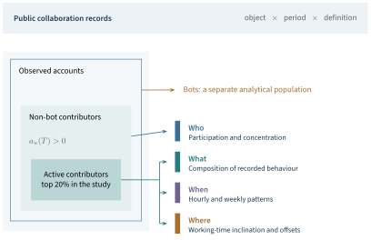
Who first separates automated accounts from the population used to study human activity, identifies accounts with at least one eligible action, and examines how activity is distributed among those contributors. What then asks which behaviors make up the activity of the selected contributors. When retains event timestamps to examine hourly and weekly patterns. Where adds an inferential step: it uses activity schedules and commit offsets to study the distribution of working-time inclinations. The last question has a different evidential status from a direct count of timestamped events.
For the published study, active contributors were defined as the top 20% by activity in the relevant population. The choice followed inspection of the cumulative distribution and also ensured enough observations for temporal analysis. It is an operational selection rule, not a definition of community membership, legitimacy, or expertise. A contributor below that threshold may still provide a critical patch or an infrequent form of expertise.
The repository set must be explicit. An account’s activity across GitHub differs from its activity within CNCF or a single project. For a community-specific analysis, only actions in that community enter the account’s activity and rank. Otherwise a prolific contributor elsewhere could be classified as central to a project in which they participate only occasionally. The global and case-specific views are complementary rather than interchangeable samples of the same quantity.
Concentration and behavioral composition#
Let the non-bot contributor activities be ordered . At a selected population fraction , a cumulative share has the form
where implements the declared rank cutoff and tie rule. This expression makes the numerator and denominator visible. The original paper evaluated selected fractions rather than publishing a dense numerical curve. The reproduced curves below retain those source graphics; no unreported intermediate observations have been inferred from their appearance.
A cumulative curve should be paired with a behavioral profile. For population , let . The vector shows which actions generate the volume. It can be reported as counts or normalized within the group, but the distinction must be retained. A larger community can have more review comments in absolute terms without each contributor reviewing more. A large comment count cannot be translated into the fraction of time spent communicating without observations of effort.
The original study’s behavior panels use counts, grouped by bots and active contributors, maturity categories, and projects. This supports a descriptive comparison of recorded workflows. It does not identify occupational roles or test whether one category is more productive than another. The prominence of commenting and reviewing motivates a closer examination of maintenance and coordination, which later network models represent more explicitly.
Observed time and inferred time zones#
UTC event timestamps support an hourly distribution without assumptions about residence. An hourly-by-weekday table records when the selected population produced visible events. It can reveal overlap periods, weekend differences, and contrasts between projects. It cannot show the duration of continuous work between those events.
To study local schedules, the original method identified each active contributor’s most active consecutive eight-hour period and aligned it to 10:00–18:00. This working-hours assumption was informed by the empirical study of Claes et al. (2018), which also found substantial variation among individuals and projects. The inferred offset is best described as a working-time inclination. A person who regularly collaborates with colleagues in another region may follow that region’s schedule; a night-time pattern can likewise produce an offset unrelated to residence.
Commit timestamps provide another source of offsets. They are configured in the environment that creates the commit, cover contributors who make commits, and do not include every participant in issue discussion or review. The original study grouped non-integer offsets into integer-hour bands and compared aggregate distributions from the two procedures. Agreement in broad patterns is useful corroboration, but it is not individual-level geographical validation: the procedures observe different populations and have different sources of error.
There is also a dependence introduced by alignment itself. Once each person’s densest eight-hour interval is mapped to a common daytime interval, the pooled local-time curve is partly shaped by that transformation. Its daytime concentration cannot independently prove the assumption used to construct it. For this reason, the empirical presentation below emphasizes the observed UTC panels and reports the offset comparison separately. The distinction keeps the 4WH framework useful without turning a scheduling proxy into an unwarranted geographic census.
4.4 Patterns of Collective Collaboration#
A small share of contributors accounts for much of the activity#
The global distribution provides the first empirical result. In the published 2020 analysis, the most active 5% of non-bot contributors accounted for 71% of activity; the top 10% accounted for 81%, and the top 20% for 89% (Xia et al., 2022, Section V.A). Figure 4.2 retains the original curves for the global population, CNCF maturity groups, and the two selected projects. The global numbers establish that participation was highly concentrated under the study’s behavior-based definition, even though that definition included discussion and review as well as change submission.
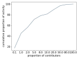
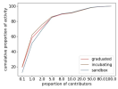
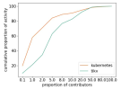
CNCF exhibited stronger concentration over much of the distribution. The source reports that approximately 10% of contributors accounted for about 90% of activity across its maturity groups. Kubernetes reached 90.7% at the top-10% cutoff. TiKV was less concentrated at the reported top-5% point, where those contributors accounted for 62.8% of activity. The project comparisons should use matched cutoffs: Kubernetes’s 90.7% at 10% can be compared with the global 81% at 10%, and TiKV’s 62.8% at 5% with the global 71% at 5%. Comparing the two project values directly would mix population fractions.
The pattern is consistent with a core population sustaining much of the visible interaction. It also shows why a count of all accounts is a weak description of sustained participation. A large peripheral population and a concentrated active population can coexist. Including issue discussion and review broadens the observation beyond commits, yet does not remove concentration.
The result should not be converted directly into a failure probability or a truck-factor estimate. The loss of an account’s recorded activity is not necessarily the loss of unique knowledge, authority, or replacement capacity. Some work can be redistributed, while a small amount of highly specialized work may be difficult to replace. The distribution identifies where continuity questions deserve investigation. Establishing dependence on particular people requires additional evidence about responsibilities, expertise, and substitution.
The top-20% rule subsequently used by the study therefore serves two purposes: it selects a population responsible for much of the measured activity and supplies sufficient records for behavioral and temporal analysis. It does not imply that the other 80% are dispensable. For a different community or a revised definition, the distribution should be re-examined before carrying over the threshold.
Automation changes the meaning of high activity#
When bots are included, the distribution changes substantially. The 16,036 accounts identified as bots generated 33% of activity among all accounts in the original analysis (Xia et al., 2022, Section V.A). This is a share of measured activity, not a share of accounts. It also uses a different denominator from the non-bot concentration curves in Figure 4.2.
Figure 4.3 shows why the distinction matters. Across GitHub, bots produced substantial comment and pull-request-opening volumes. The study reports that Dependabot alone opened more than 17 million pull requests in 2020, of which approximately 1.3 million were merged. These figures describe a particular automated workflow and year. They do not measure the number of distinct dependency problems solved or the net effort saved for maintainers.
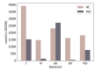
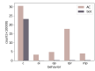
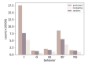
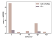
The CNCF bot profile differs from the global one: commenting dominates its recorded automated activity. Thus bot activity is not a homogeneous category with a fixed behavioral signature. Automation takes part in different workflows, and its interpretation depends on those workflows. Removing all bots is appropriate for some questions about human schedules, but would erase a substantial part of the production process when the question concerns automation or total collaboration traffic.
The root aggregate provides one response to extreme account-level volumes, as derived in Section 4.2. It reduces their marginal contribution to a repository score. Classification and aggregation nevertheless solve different problems. A root transformation does not establish which accounts are automated; removing bots does not establish whether the remaining actions are useful. Both decisions should follow the evaluation question rather than an assumption that the highest event volume represents the greatest human contribution.
Discussion and review are part of the collaborative workload#
The human profiles show the importance of interaction around changes. In the CNCF cases, commenting and review comments are prominent relative to opening issues and pull requests. Graduated projects have more recorded behaviors in aggregate than the incubating and sandbox groups despite containing fewer repositories. This is compatible with their larger contributor population and sustained interaction; it is not a per-contributor productivity comparison or evidence that maturity status caused the difference.
This empirical result develops the motivation for a multi-behavior model. An account that responds to incoming questions and reviews others’ changes may perform substantial community work without submitting many pull requests. A measurement based only on authored code would represent that pattern poorly. At the same time, a comment count cannot determine whether a response was substantive, whether it resolved a problem, or whether several short messages were part of one review episode.
The distinction has consequences for contribution recognition. Behavioral counts can identify candidates for closer examination and expose work that code-only accounting overlooks. A richer representation can then ask who interacted with whom, on which artifact, and with what recorded outcome. That is the transition to community-level network evaluation developed in Chapter 5. Relational information is motivated by an observed feature of collaboration rather than added solely because a graph algorithm is available.
There are also contributions outside the model. Analysis of open-source acknowledgment systems finds forms of participation that are not well represented by conventional code records (Young et al., 2021). Our results support expanding the empirical view of collaboration, but they do not justify treating five or six platform behaviors as an exhaustive inventory of community value. Documentation, design, mentoring, and coordination may be partly visible through these events and partly recorded elsewhere.
Activity has a temporal organization#
The observed UTC distributions in Figure 4.4 show distinct temporal profiles. The global population is active across a broad interval; the original analysis describes elevated activity from approximately 08:00 to 21:00 UTC. Kubernetes shows a later interval, approximately 13:00–23:00 UTC, while TiKV’s concentrated interval is approximately 03:00–09:00 UTC (Xia et al., 2022, Section V.C). These intervals summarize the source’s descriptive reading of the profiles, rather than newly estimated change points.
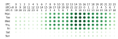
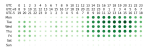
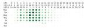
Weekday activity exceeds weekend activity in the reported populations. Among CNCF maturity groups, the source gives a weekend share of 5.8% for incubating projects, compared with 7.4% for graduated and 7.5% for sandbox projects. These values describe the fraction of observed activity occurring on two weekend days, not a duration of work or the fraction of contributors employed by companies. The different number of weekdays and weekend days also matters if the intended comparison is average activity per day.
The patterns are consistent with substantial collaboration occurring during conventional working schedules. They do not establish contractual employment or organizational sponsorship for an individual. The work of Claes et al. (2018) provides a comparison based on commit timestamps and emphasizes individual and project variation. Together, these studies motivate examining temporal organization while avoiding the inference that a sparse event stream is a time sheet.
For community coordination, the practical information is the location of overlap and the extent of temporal concentration. A globally distributed contributor population may produce a long daily activity interval, whereas a more synchronized population produces a narrower one. Meeting schedules, review handovers, and expectations of response can be informed by such distributions, supplemented by contributors’ stated availability. An observed schedule does not establish an obligation for contributors to remain available at those times.
Working-time inclination is informative but not geography#
Table 4.3 reproduces the comparison between inferred active-contributor offsets and commit-contributor offsets. CNCF, its maturity groups, and Kubernetes show substantial representation in the UTC to UTC band. TiKV has a different profile: 72% of active contributors are assigned to UTC to UTC, compared with 81% of commit contributors. These percentages concern different populations and procedures; their agreement is a broad pattern, not a matched-person accuracy estimate.
| Population | UTC to | UTC to | UTC to |
|---|---|---|---|
| AC / CC (%) | AC / CC (%) | AC / CC (%) | |
| CNCF | 35 / 43 | 26 / 33 | 19 / 22 |
| Graduated | 35 / 45 | 23 / 28 | 21 / 25 |
| Incubating | 40 / 45 | 26 / 33 | 16 / 19 |
| Sandbox | 30 / 37 | 31 / 40 | 18 / 22 |
| Kubernetes | 36 / 43 | 22 / 30 | 21 / 25 |
| TiKV | 3 / 13 | 9 / 4 | 72 / 81 |
Source: Xia et al. (2022), Table III; all 36 percentages retained. AC: active contributors, classified by inferred working-time inclination. CC: commit contributors, classified by commit time-zone offsets. The populations and observation procedures differ. The three bands are not an exhaustive partition, and their geographic labels in the source are approximate; the values do not identify contributors’ countries or places of residence.
The interpretation should remain at that level. Time-zone bands overlap countries and do not uniquely determine residence. Configured commit offsets may be stale, and schedules may follow collaborators rather than local daylight. The source’s regional patterns are best understood as evidence about the temporal organization of visible collaboration. The framework can guide further investigation of geographic participation, but that investigation requires independent location information and an account of missing locations.
Across the four questions, the contribution of the study is a coherent empirical account: participation is concentrated; the behavioral mix differs between humans, bots, and communities; discussion and review are substantial components of visible collaboration; and activity occurs within identifiable temporal patterns. The dissertation integrates these observations into a broader account of community sustainability (Xia, 2024, Chapter 5). Their significance for evaluation lies in the structure they reveal, rather than in a universal target for how much activity a community should produce.
4.5 Aggregation Choices and Comparative Evidence#
The aggregation choice in two repository cases#
The position paper compares Activity with a linear companion labeled Activity (Han et al., 2024, Sections 4.1–4.2). Despite the label, this companion omits the account-level square roots; it is not the algebraic square of repository Activity. In particular, includes cross terms absent from . Table 4.4 retains the paper’s two illustrative repository profiles.
| cityofaustin/atd-data-tech | coinhall/yacar | |
|---|---|---|
| Activity | 737.87 | 194.35 |
| Activity rank | #616 | #4757 |
| Activity | 20900.65 | 20672.82 |
| Activity rank | #265 | #273 |
| Participants | 39 | 13 |
| Open Issue | 489 | 0 |
| Open PR | 0 | 1116 |
Source: Han et al. (2024), Table 3; all numeric values retain the printed precision. The case month is not specified in that table. Activity denotes the companion without account-level roots. The table prints rank 273 for coinhall/yacar, whereas the adjacent prose says 274; the tabulated value is retained here. Zero is a reported count, not missing data.
Under the linear companion, the repositories have similar scores, 20900.65 and 20672.82, and nearby ranks, 265 and 273. Their behavior vectors differ markedly: cityofaustin/atd-data-tech reports 489 opened issues and no opened pull requests, whereas coinhall/yacar reports no opened issues and 1,116 opened pull requests. Their reported participant counts are 39 and 13. Under Activity, the corresponding ranks are 616 and 4,757. A scalar that initially places the cases close together therefore gives a different ordering relative to the wider repository population after account-level moderation.
The source attributes the high-volume patterns to automated behavior. Its tabulated profiles alone do not identify every automated account or supply the complete account-level action distribution. We therefore use the case for the claim it directly supports: the aggregation rule can materially change a repository’s measurement profile, and the retained action counts help explain why that change merits inspection. The two aggregate rows cannot reconstruct the full root calculation, establish how many actions were useful, or isolate the contribution of each account. Those questions require the underlying records.
The broader position-paper analysis reports a Spearman association of 0.902 between Activity and Participants, compared with 0.587 for Activity (Han et al., 2024, Table 2). The source reports 1,380 distinct repositories and 8,082 repository–month records for January–June 2024, selected through monthly OpenRank rankings. The exact expansion from the monthly selected lists to the reported analytical record count is not fully specified in the supplied text. This association is consistent with sensitivity to participation breadth; shared inputs, selection, and repeated repository observations prevent interpreting it as independent validation of useful contribution.
Activity and influence describe different repository profiles#
The OpenDigger study places these statistical observations beside two network measures. C-OpenRank emphasizes collaboration within a community, while G-OpenRank represents influence through the wider collaboration network (Wang et al., 2026). Chapter 5 develops their construction. Here the question is empirical and prior to that derivation: do the available measures describe interchangeable patterns of participation?
For August 2025, the study selected the top 1,000 repositories by G-OpenRank and reported their metric correlations. Figure 4.5 redraws the seven behavioral columns of the three published rows. Activity is strongly associated with Participants (0.902) and Issue Comment (0.814). C-OpenRank has a stronger association with PR Review (0.70) than Activity (0.421) or G-OpenRank (0.531). These are differences in the observed association profiles, not estimated effects of review activity on influence.
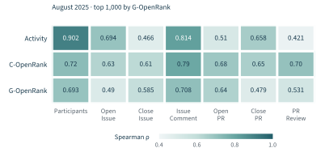
The metrics are related: the same table reports correlations of 0.88 between Activity and C-OpenRank, 0.83 between Activity and G-OpenRank, and 0.81 between the two OpenRank variants. Their shared collaboration inputs make association unsurprising. Some coefficients repeat those in the earlier position-paper table; their appearance in two publications should not be counted as independent replication. The later paper is the principal reference for this three-metric comparison, while the earlier table supplies the linear-versus-root contrast. Their non-identical profiles show why one number should not substitute for every dimension. Selection on G-OpenRank limits generalization to the full repository population, and the published significance statement is retained without presenting a new statistical analysis.
The ten repository profiles in the paper’s Table 5 make the distinction more tangible. Figure 4.6 displays all ten cases in their original order, with each measure on the same logarithmic rank scale. These are the ranks printed in the source, not ranks recomputed within the ten examples. Missing OpenRank values for coinhall/yacar remain unreported; they are not assigned zero or a last-place rank.
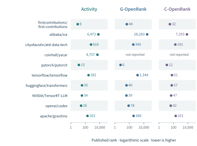
Three profiles are particularly informative. pytorch/pytorch ranks 13th in Activity, 6th in G-OpenRank, and 12th in C-OpenRank, placing it highly on all three measures. tensorflow/tensorflow ranks 281st, 1,344th, and 61st, respectively: its community-oriented position is much stronger than its global-network position. openai/codex ranks 26th, 78th, and 42nd, combining high recorded participation with a different relative position in the global network. These are descriptions of the August 2025 snapshot, not timeless assessments of the projects.
The behavior counts provide a further interpretation layer. The source reports 806 participants and 406 opened pull requests for openai/codex, compared with 121 participants and 790 opened pull requests for tensorflow/tensorflow. The two profiles already differ before network information is introduced. The onboarding repository firstcontributions/first-contributions reports 876 participants and 882 opened pull requests, with ranks of 9, 44, and 32. Its interaction pattern should be understood in relation to its onboarding purpose rather than treated as a direct estimate of production-software capability.
This comparison also illustrates how to preserve time and provenance. The two repositories in Table 4.4 appear again in the August 2025 cases, with different Activity values and participant counts. The earlier case table does not state its month, and the underlying measurement versions are not established as equivalent. The observations cannot therefore be joined into a trend. Each remains useful within its own documented scope.
Taken together, the empirical results support a measurement portfolio: action counts describe the observed workflow, Activity combines its volume and distribution, and network measures add relational structure. The portfolio supports a more specific question about a repository than an undifferentiated label such as “health.” Which of these observations bears on an evaluation judgment still depends on the affected outcomes and purpose established in Part I.
4.6 Activity, Sustainability, and Evaluation#
What the empirical findings contribute to theory#
Activity research supplies more than a convenient index. It establishes empirical distinctions that an account of open-source evaluation must preserve. The first is between participation volume and its distribution. The global and CNCF observations show that a large contributor population can coexist with highly concentrated activity. The root aggregate gives that distinction a mathematical expression, but an evaluation of continuity must also consider who holds knowledge, authority, and the capacity to take over work.
The second distinction concerns the composition of collaboration. Discussion, review, and change submission contribute differently to a collective process. Their relative frequency varies across populations and workflows. A measure that combines these actions makes a choice about representation; it does not discover a universal unit of contribution. This explains why the behavioral vector remains useful even after an aggregate has been calculated, and why community purpose belongs in the evaluation design.
The third distinction is between activity and the conditions that sustain it. Temporal concentration, participation breadth, and the distribution of review work can help identify maintenance dependencies or coordination difficulties. They do not establish whether contributors experience excessive workload, whether an artifact remains useful, or whether a project can continue through a transition. The dissertation’s wider sustainability research places collective activity alongside lifecycle and continuity questions (Xia, 2024). A fall in activity may reflect abandonment, successful stabilization, a migration of work, or a change in observation. The interpretation requires evidence beyond the trajectory alone.
These findings give concrete content to the account of value and capability in Chapter 2 and the design framework in Chapter 3. The evaluation question determines which actions should count, whose participation matters, which reference population is appropriate, and what additional outcomes need to be observed. A description of activity becomes an evaluative claim when those links are supported.
Validation follows the intended interpretation#
Computational validation asks whether the declared transformation was executed correctly. Useful checks include duplicate records, a closed but unmerged request, a merge actor different from the author, boundary timestamps, renamed accounts, and missing identifiers. With fixed nonnegative weights and a fixed identity map, adding an eligible action cannot decrease the corresponding weighted total or root aggregate. The bounds in Equation 4.7 provide another check. Passing such checks establishes properties of the implementation, not the usefulness of the recorded work.
Interpretive validation asks whether the observations support the intended claim. If the claim concerns substantive review, an independent assessment of review content and outcomes is needed. If it concerns continuity, role coverage, contributor transitions, and the ability to maintain the artifact become relevant. If the purpose is recognition, the effects of using the metric must also be examined. This follows the principle that validity concerns score meaning and use (Messick, 1995), and the finding that developer productivity cannot be represented adequately by a single activity dimension (Forsgren et al., 2021).
Incomplete observations should be carried into the result. Losing eligible actions cannot increase an unnormalized root aggregate under otherwise fixed conditions, but it can change the ordering of repositories and apparent composition of activity. A missing interval cannot generally be corrected by scaling with the fraction of observed hours: the omitted period may coincide with a particular workflow or time zone, and nonlinear aggregation complicates such adjustments. Sensitivity analyses should distinguish plausible deletion scenarios from a validated observation model.
Definition changes require comparable care. Reweighting behaviors, changing a bot detector, joining identities, or changing repository membership can produce a discontinuity in a series. When underlying data permit, both versions should be computed over an overlap period. Without that evidence, the series should retain a visible version boundary. The latest definition can guide new analysis without erasing the provenance of earlier observations.
A measurement result that can be inspected and reused#
A reusable activity result should preserve the behavior vector, aggregate, population, time window, identity and bot rules, weights, attribution, aggregation order, and source snapshot. Program and query versions make those choices executable; source locations and transformation records make published evidence traceable (Sandve et al., 2013). For this chapter’s empirical exhibits, the accompanying source materials retain table transcriptions, plotting scripts, original figure panels, and their locations in the papers. Reproducing a presentation from published values is distinct from rerunning the historical analysis.
The principal empirical evidence remains the team’s studies: the large-scale activity analysis and its dissertation development, the comparison of aggregation rules, and the OpenDigger metric cases. Their integration yields a more precise role for Activity in Open Source Evaluatology. It is a versioned representation of selected participation, sensitive to both recorded volume and its distribution. It supports questions about collaboration and provides inputs for relational models. The next chapter examines what becomes visible when those actions are represented as relationships among developers, artifacts, and projects.
References#
Bird, C., Rigby, P. C., Barr, E. T., Hamilton, D. J., German, D. M., and Devanbu, P. (2009). The promises and perils of mining Git. In Proceedings of the 6th IEEE International Working Conference on Mining Software Repositories, pp. 1–10. DOI: 10.1109/MSR.2009.5069475.
Claes, M., Mäntylä, M. V., Kuutila, M., and Adams, B. (2018). Do programmers work at night or during the weekend? In Proceedings of the 40th International Conference on Software Engineering, pp. 705–715. ACM. DOI: 10.1145/3180155.3180193.
Dueñas, S., Cosentino, V., Gonzalez-Barahona, J. M., del Castillo San Felix, A., Izquierdo-Cortazar, D., Cañas-Díaz, L., and Pérez García-Plaza, A. (2021). GrimoireLab: A toolset for software development analytics. PeerJ Computer Science, 7, e601. DOI: 10.7717/peerj-cs.601.
Forsgren, N., Storey, M.-A., Maddila, C., Zimmermann, T., Houck, B., and Butler, J. (2021). The SPACE of developer productivity: There’s more to it than you think. ACM Queue, 19(1), 20–48. DOI: 10.1145/3454122.3454124.
Fry, T., Dey, T., Karnauch, A., and Mockus, A. (2020). A dataset and an approach for identity resolution of 38 million author IDs extracted from 2B Git commits. In Proceedings of the 17th International Conference on Mining Software Repositories. ACM. DOI: 10.1145/3379597.3387500.
Golzadeh, M., Decan, A., Legay, D., and Mens, T. (2021). A ground-truth dataset and classification model for detecting bots in GitHub issue and PR comments. Journal of Systems and Software, 175, 110911. DOI: 10.1016/j.jss.2021.110911.
Gousios, G., and Spinellis, D. (2012). GHTorrent: GitHub’s data from a firehose. In Proceedings of the 9th IEEE Working Conference on Mining Software Repositories, pp. 12–21. DOI: 10.1109/MSR.2012.6224294.
Gousios, G., Kalliamvakou, E., and Spinellis, D. (2008). Measuring developer contribution from software repository data. In Proceedings of the 2008 International Working Conference on Mining Software Repositories, pp. 129–132. ACM. DOI: 10.1145/1370750.1370781.
Han, F., Zhao, S., Wang, W., Zhou, A., Qian, W., Zhou, X., Peng, J., You, L., Chen, Y., Xia, X., Tang, Y., Yang, L., and Tian, C. (2024). Open Source Evaluatology: An evaluation framework and methodology for open source ecosystems based on evaluatology. BenchCouncil Transactions on Benchmarks, Standards and Evaluations, 4(4), 100190. DOI: 10.1016/j.tbench.2025.100190. Bibliographic note: the journal assigns this article to the December 2024 issue; the DOI and online publication date are in 2025.
Kalliamvakou, E., Gousios, G., Blincoe, K., Singer, L., German, D. M., and Damian, D. (2014). The promises and perils of mining GitHub. In Proceedings of the 11th Working Conference on Mining Software Repositories, pp. 92–101. ACM. DOI: 10.1145/2597073.2597074.
Kitchenham, B., Pfleeger, S. L., and Fenton, N. (1995). Towards a framework for software measurement validation. IEEE Transactions on Software Engineering, 21(12), 929–943. DOI: 10.1109/32.489070.
Ma, Y., Bogart, C., Amreen, S., Zaretzki, R., and Mockus, A. (2019). World of Code: An infrastructure for mining the universe of open source VCS data. In Proceedings of the 16th IEEE/ACM International Conference on Mining Software Repositories, pp. 143–154. DOI: 10.1109/MSR.2019.00031.
Messick, S. (1995). Validity of psychological assessment: Validation of inferences from persons’ responses and performances as scientific inquiry into score meaning. American Psychologist, 50(9), 741–749. DOI: 10.1037/0003-066X.50.9.741.
OpenDigger (2026a). Activity: Metric definition. https://open-digger.cn/en/docs/user_docs/metrics/activity/. Online documentation inspected 1 November 2026.
OpenDigger (2026b). Activity implementation,
src/metrics/indices.ts. https://github.com/X-lab2017/open-digger/blob/master/src/metrics/indices.ts. Source inspected 1 November 2026; file identity recorded in the accompanying research ledger.Sandve, G. K., Nekrutenko, A., Taylor, J., and Hovig, E. (2013). Ten simple rules for reproducible computational research. PLoS Computational Biology, 9(10), e1003285. DOI: 10.1371/journal.pcbi.1003285.
Wang, W., Han, F., Zhao, S., Zhou, X., Qian, W., Zhou, A., Xia, X., Yang, L., Wang, R., Jiang, N., and Duan, M. (2026). OpenDigger: A practical framework for assessing community health and sustainability in open source collaboration platforms. In Proceedings of the ACM Web Conference 2026, pp. 7745–7756. ACM. DOI: 10.1145/3774904.3792807.
Xia, X., Weng, Z., Wang, W., and Zhao, S. (2022). Exploring activity and contributors on GitHub: Who, what, when, and where. In 2022 29th Asia-Pacific Software Engineering Conference, pp. 11–20. IEEE. DOI: 10.1109/APSEC57359.2022.00013.
Xia, X. (2024). Data-Driven Empirical Research on the Key Elements of Sustainability in Open Source Software Communities. Doctoral dissertation, East China Normal University, March 2024. In Chinese; English title supplied by the dissertation.
Young, J.-G., Casari, A., McLaughlin, K., Trujillo, M. Z., Hébert-Dufresne, L., and Bagrow, J. P. (2021). Which contributions count? Analysis of attribution in open source. In Proceedings of the 18th IEEE/ACM International Conference on Mining Software Repositories, pp. 242–253. DOI: 10.1109/MSR52588.2021.00036.
Zhao, S. (2025). Research and Application of Key Technologies for Open Source Ecosystem Data Platform. Doctoral dissertation, Tongji University, September 2025. In Chinese; English title supplied by the dissertation.